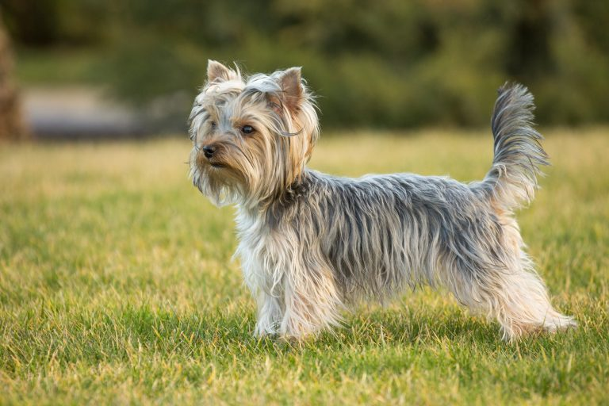
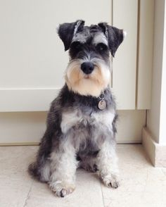
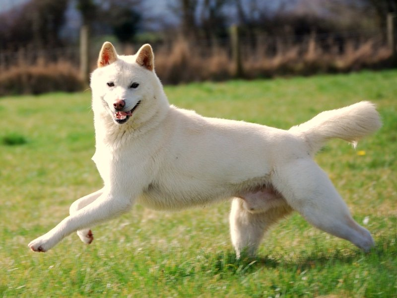
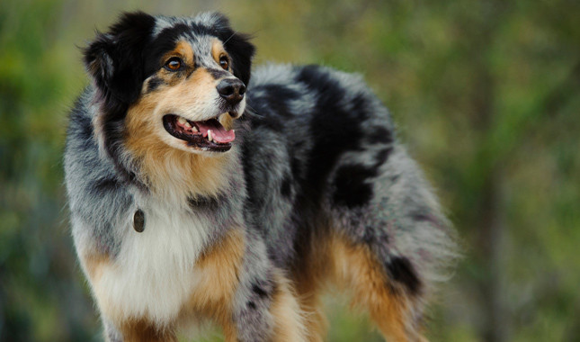

<html>
    <head>
        <style>
            body {
                background-image: url("kakaotalk.jpg");
                }   
        <title>Doggies Website</title>
        
   </head>
    <body>
        <h1 style= "border:2px solid violet;">My Favorite Dog Varieties</h1>
          <h2 style= "color: slateblue;"> About the author</h2>
          
        <p> Hello, welcome to my site. I, the author, am <b>Jimmy Jhong</b>. For my entire life, I have had an intense passion
          for animals. However, in all my studies and observations I have grown a particular affinity towards animals of the 
          <i> Canis lupus familiaris </i> variety, or more commonly known as dogs. I have spent my life growing up around members of
          the <i> Canis lupus familiaris </i> variety, and I have come to grow even stronger affinities towards certain pedigrees.
          I would like to elaborate on the varieties I have particular interest in within this page.
          </p>
       
        <h2 style= "color: darkred;"> Yorkshire Terrier </h2>
         
         <p> The Yorkshire Terrier; What an interesting animal. And what's even more interesting is that these beautiful dogs have human like hair
             instead of fur! They lack the same nostril-tickling dander that most dogs have, and they also do not leave hairs behind on everything
             they happen to lay down on. As cute and pampered as they are in today's society, they were originially
             bred for hunting purposes. Originating from Great Britain, they served as rat catchers in mines and were often used to burrow underground in search of badgers
             and foxes underground. Just incredible. 
             To my surprise, these instincts are still intact in even the most adorable housepets.
             My aunt has two Yorkshire Terriers. One of them attacks anything that resembles a small rodent (any animalistic toy) 
             and shakes it in its jaws. The other one always digs at her bed when she enters it. I haven't seeen her outside, but I have
             a feeling that she would uproot every plant in the garden. Multiple members of my family have owned the treasured Yorkie, so I've
             grown quite an attachment to them as I've spent my whole life around them. You may be wondering, why would I be so passionate and attentive to Yorkies? 
             The principles these little dogs represent attracts me to them the most.
             If I was to be reborn into a dog, I can almost guarantee you that I would be a Yorkshire terrier. These dogs take the saying
             "It doesn't matter how big you are, it matters how big your heart is" to the limit. I am not a big, burly man like many of
             my distant Mongolian ancestors; I come in the modest size of 164 cm. But I somewhat see myself in these dogs. 
             I characterize my size and value in this world based off my actions, not my appearance. 
        </p>
        <h2 style= "color: dodgerblue;"> Schnauzer </h2>
        
        <p> The Schnauzer is a dog that is quite similar to the Yorkshire Terrier. It does not shed, comes in a wide range of sizes, and was 
            originally bred to kill rats. It is essentially the German version of the Yorkshire Terrier. I do not have any personal experiences
            with the Schnauzer, or any of the other dogs that will be feautured in this site, but I would definitely like to own one of these dogs.
            The Schnauzer has a very majestic apperance. The bearded look makes the Schnauzer look wise and fierce, but they are both playful
            and athletic. The Schnauzer is the cool, humble guy who's the main character of a manga. He doesn't provoke the fight, but
            he is more than able to defend himself when the time calls. Schnauzer is like the quiet, mysterious older brother of the Yorkshire Terrier,
            so that's why I like the Schnauzer.
        </p>
        <h2 style= "color: Orange;"> Jindo </h2>
        
        <p> The Jindo is a loyal hunting dog originating from the Jindo Island in Korea and belongs to the Spitz family of dogs. The Spitz contains the Shiba Inu, Akita, Husky, and other dogs. Take special notice
        that all of these dogs are located in East Asia. These dogs are extremely active and would serve great as a running mate and brother/sister for life.
        The Jindo is famous for having unmatched loyalty. In Korea there is a famous story of
        a Jindo that was taken 187 miles away from her home that was still able to find her way home. After seven months of starving, she was nearly dead when
        she returned to her owner. Quite the heartfelt story! The Jindo just looks strong and noble. The Jindo is like the friend that will still
        be there, even if I go bankrupt. I heard stories of the Jindo's loyalty and I was instantly attracted. I am aware that other dogs
        from the spitz family also have displayed fierce loyalty, such as Hachiko, but I suppose I like the Jindo because I know it comes from 
        my ethnic homeland. I would like to make myself clear, I am not discriminating against other dogs simply due to countries of origins, 
        the other Spitz and dogs in general are great, but I suppose I just want a little piece of home.
        </p>     
        <h2 style "color: LightSlateGray;"> Australian Shepherd </h2>
           
        <p> The Australian Shepherd is revered for its intelligence, athletic capabilities, and loyalty. Contradictory to the name, the Australian Shepherd
            may have been bred in Spain, the United States, or Australia. Though they have their roots on the farm, these dogs are excellent showdogs.
            These dogs are excellent agility athletes and they sport a unique appearance. Though the colors vary, the blue coat, as shown in the photo,
            is extremely popular and very distinct. I vividly the remember the first time I saw one of these dogs. It was in the last summer break,
            I was visiting the animal shelter and I saw a black Australian Shepherd in a kennel. I instantly fell in love. What a beautiful dog. The Australian
            Shepherd is like the perfect child. Athletic, obedient, and intelligent. Now these qualities do not make anyone "perfect" and
            people who do not have these qualities are not inferior in any way, but if I ever do get an Australian Shepherd, I'll be a proud father.
    </p>
        <h3 style= "color: red;"> My Preferences</h3>
    <table width='100%' border=1px cellspacing=0>
       <tr>
           <th> Honorable Mentions
           <th> My favorites in order
       </tr>
       <tr>
           <td>
           <ul>
               <li> Jack Russell Terrier
               <li> Border Collie
               <li> Poodle
               <li> Maltese
           </ul>
           </td>
           <td>
               <ol>
                   <li> Yorkshire Terrier
                   <ul>
                       <li> Size: Very Small to Small
                   </ul>
                       <li> Australian Shepherd
                   <ul>
                       <li> Size: Medium to Large
                    </ul>
                       <li> Schnauzer
                   <ul>
                       <li> Size: Small to Large
                   </ul>
                       <li> Jindo
                   <ul>
                       <li>Size: Medium
                   </ul>
                       </ol>
           </td> 
       </tr>
        </table>
        <h3 style= "color: red;"> Why the Yorkshire Terrier is number one </h3>
        <p> I haven't actually owned any dogs in my life, so maybe my reasons are uncredible, but I have so many experiences around nice
            Yorkies that I naturally just grew to like them most. Yorkies are fierce but loving. They are easy to take care of and quite sanitary.
            I imagine myself owning a Yorkie in the near future over other types of dogs. 
        </p>
        <iframe width="560" height="315" src="https://www.youtube.com/embed/K-l6UcBclPU" frameborder="0" gesture="media" allow="encrypted-media" allowfullscreen></iframe>
        <h3> Animal Shelters I have visited </h3>
        <dl>
            <dt> <a href="https://www.paws.org/"> Lynnwood PAWS </a> </dt>
            <dd> An animal shelter and wildlife protection organization located in Lynnwood that also does animal intake and neutering services. 
            <br>
            <dt> <a href="http://www.seattlehumane.org/"> Seattle Humane Society </a> </dt>
            <dd> Located in Bellevue, the Seattle Humane Society dedicates itself to rescuing all animals and was known for intaking many animals from areas affected by Hurricane Harvey.
            <br>
            <dt> <a href="https://everettwa.gov/148/Animal-Shelter"> Everett Animal Shelter </a> </dt>
            <dd> The Everett Animal Shelter is a government funded shelter located on Smith Island near the mouth of the Snohomish River that offers animal control services and has a selection of rodents and birds along with dogs and cats.
            </dd>
        </dl>
            </body>
</html>
